Propuesta de marca y sitio web
Lo que encontramos en el logo, el menú y la tarjeta de domicilios; la identidad que proponemos a partir de ellos; y los cambios que hizo el equipo revisor antes de construir el sitio.
Equipo A · Análisis
Chile rojo con sombrero de zigzag verde, rojo y blanco, gafas oscuras y fuego saliendo de la boca. Texto "TRAAAKAS" en brocha rasgada naranja y "TAQUERIA" en amarillo. Contorno negro con borde blanco, como sticker.
Taquería mexicana en Colombia. Las banderas de México y Colombia aparecen juntas en las tres piezas: es una fusión, y es el diferencial de la marca.
Aparece como "Traaakas Taquería", "Taquería Mexicana Trakass" y "Trakas". Se unifica como Trakas Mexican Food; las otras formas quedan como nombres alternos para que Google relacione todas las búsquedas.
| Plato | Precio (COP) |
|---|---|
| Tacos de Birria | $25.000 |
| Burrito Mexicano | $25.000 |
| Chilaquiles | $20.000 |
| Ramen (birria) | $20.000 |
| Dorilocos | $20.000 |
| Volcanes x3 | $20.000 |
| Gringas x3 | $25.000 |
Proteínas: Birria, Pollo, Chorizo, Chanchullo. Bebidas sin precio en el menú: Agua de Jamaica, Micheladas, Agua con Gas, Coca-Cola Personal.
Equipo A · Identidad
Cada color sale de una parte de la mascota. El logo no se modifica; la paleta solo lo acompaña.
#D62718Cuerpo del chile. Acentos y sombras de títulos.#F26A1BLetras TRAAAKAS. Nombres de platos.#FFC21A"TAQUERIA". Precios y enlaces.#1F7A35Sombrero y aro. Detalles y divisores.#B9782EAla del sombrero. Bordes decorativos.#141110Fondo de pizarra, como el menú impreso.#FFF6E5Texto sobre negro y tarjetas claras.Bangers recoge la energía de la brocha del logo sin imitarla. Bebas Neue es la misma familia condensada de la tarjeta de domicilios.
Sobre fondo negro o muy oscuro, con su borde blanco. Espacio libre alrededor igual al alto de la "T".
Mascota sola (sin texto) para favicon, stickers y fotos de perfil.
Recolorear, estirar, rotar ni poner sobre fotos con mucho detalle.
Cambiar la tipografía del nombre ni quitar las banderas.
Cercana, picante y con humor de barrio. Mezcla palabras mexicanas y colombianas.
Logo · Evaluación y ajustes
Se editó la imagen original píxel a píxel. La mascota, el sombrero, el fuego, los colores y la brocha de las letras son los del archivo original.
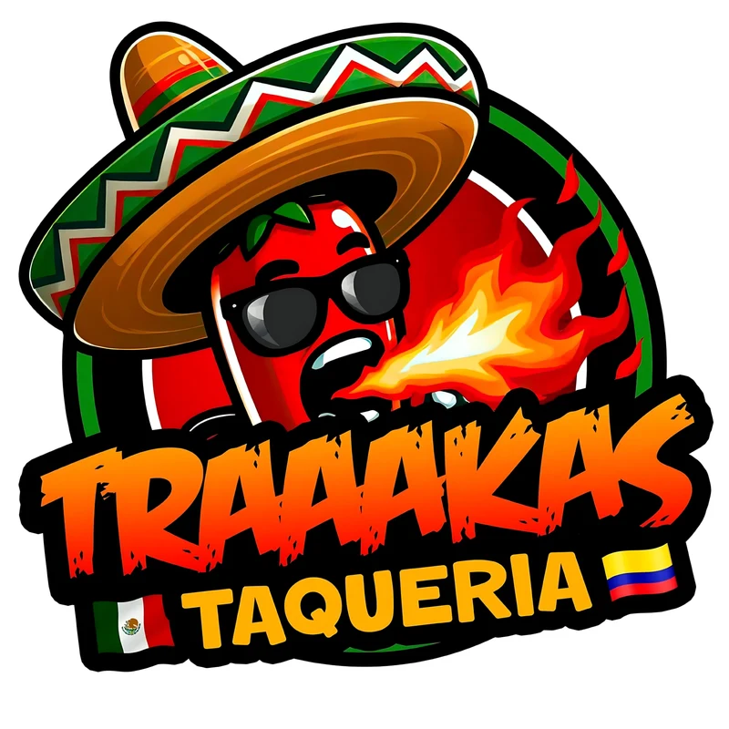
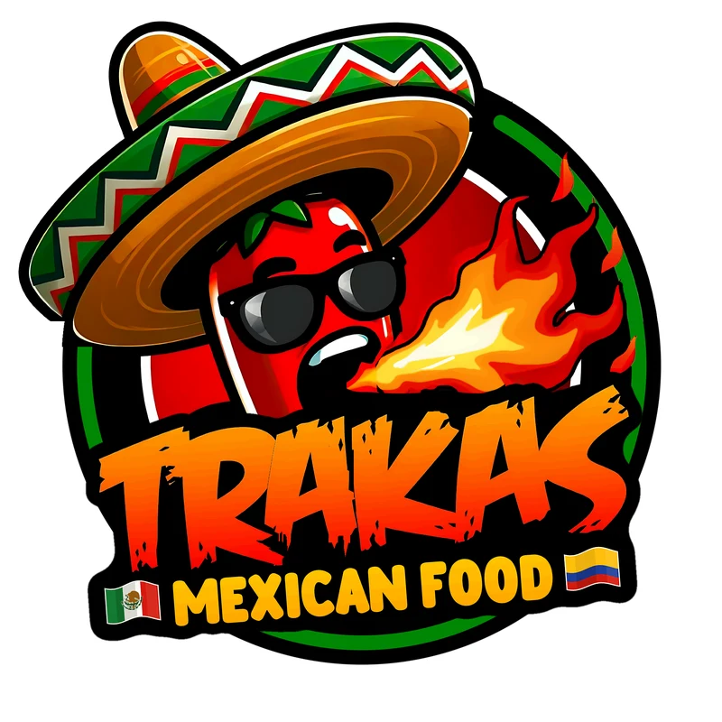
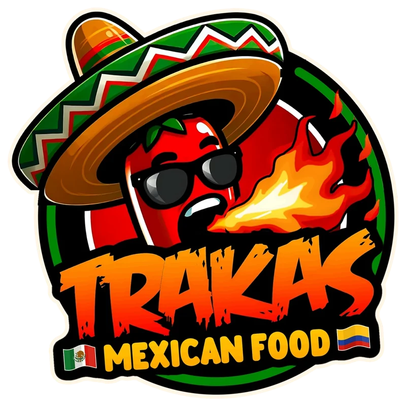
| Cambio | Cómo se hizo |
|---|---|
| TRAAAKAS → TRAKAS | Cada letra se separó por el negro que hay entre ellas, así la R conserva su pata completa. La segunda A es la A original con dientes y vetas distintos para que no se note la copia. |
| MEXICAN FOOD | Misma línea, inclinación y bloque negro que TAQUERIA, en amarillo con un degradado leve. Es más estrecha que TRAKAS para que el nombre mande. |
| Banderas | Redibujadas completas, ondeando en el estilo del chile: 2 tonos, contorno negro, filete crema. El escudo de México viene del original. |
| Sombrero | Se limpió la punta derecha del ala y el aro verde ahora nace por debajo, con un remate redondo. |
| Fuego | Rehecho al estilo del chile: contorno negro, 4 tonos con degradado suave, brillos crema y un borde inferior limpio. |
| Fondo y placa | Fondo transparente y placa negra con un contorno continuo, apta como línea de corte de sticker. |
Mascota
El cuerpo, el sombrero y las gafas salen del logo; lo nuevo se dibujó siguiendo esta ficha de estilo.
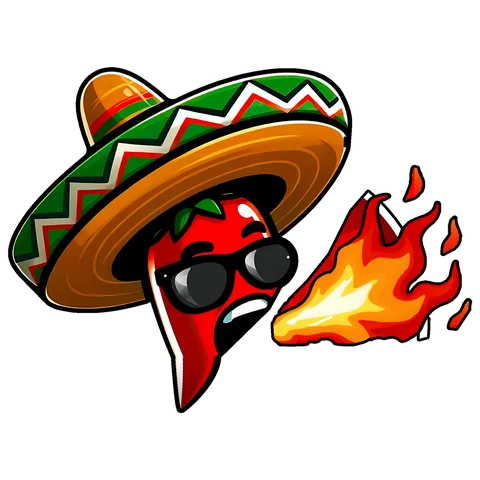
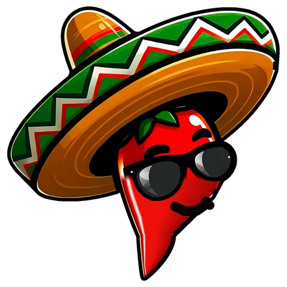
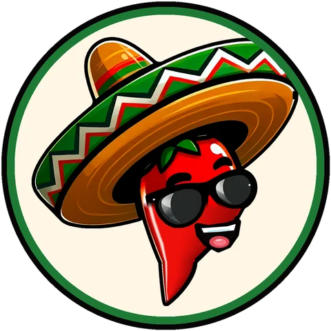
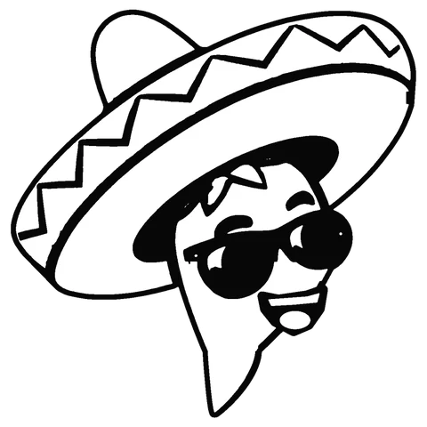
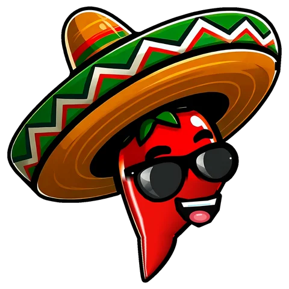
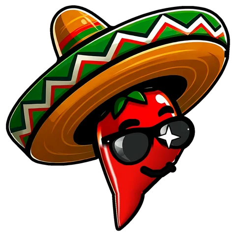
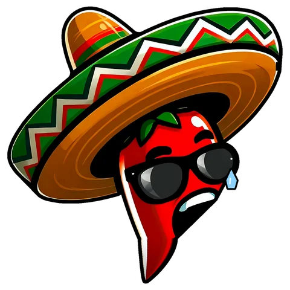
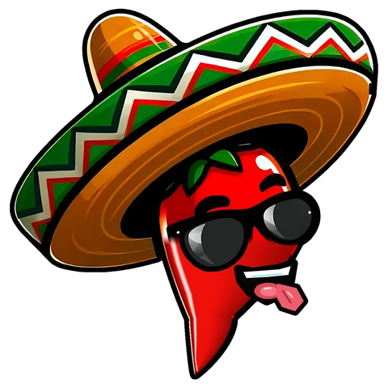
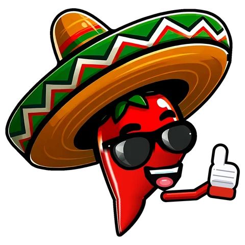
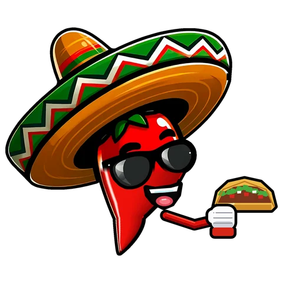
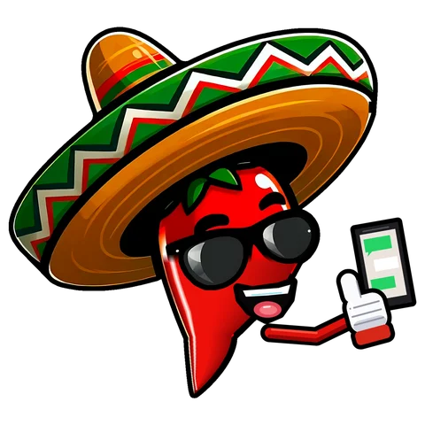
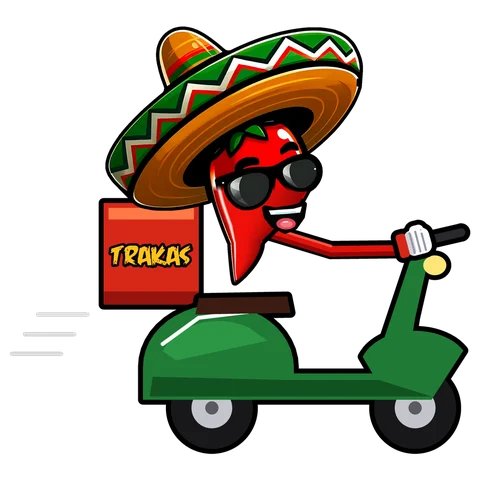
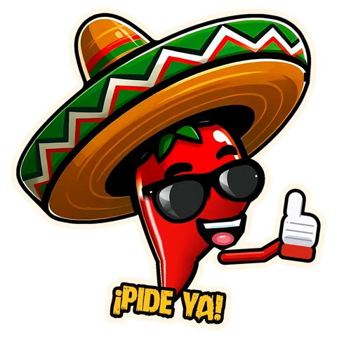
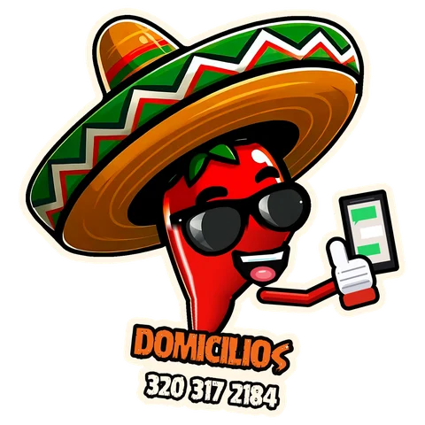
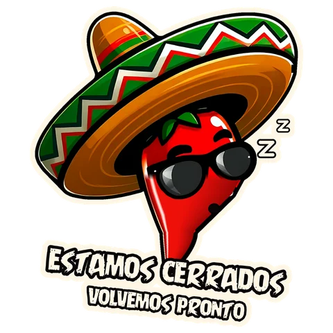
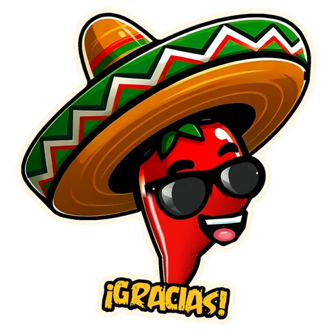
Tipografía propia
No existe una fuente libre igual a la del logo, así que se creó una. T, R, A, K y S son las letras del logo vectorizadas; el resto sigue sus proporciones, grosor y rasgado. Cada letra tiene una alternativa que se activa sola para que las letras repetidas no salgan idénticas.
ABCDEFGHIJKLMNÑOPQRSTUVWXYZ
0123456789 ¡!¿?$&
TACOS DE BIRRIA · ¡PIDE YA!
Úsala solo en titulares de 28 px o más; el texto corrido va en Nunito. Licencia: glifos derivados de Passion One (SIL Open Font License 1.1).
Equipo de diseño
Cada pieza pasó por cuatro revisores (dirección de arte, ilustración, tipografía y marca/web), que puntuaron cada parte del 1 al 10. Solo se dio por buena con 8 o más.
| Pieza | Rondas | Resultado final |
|---|---|---|
| Logo | 3 | Aprobado por los 4: TRAKAS 9, MEXICAN FOOD 8,5, banderas 8,5, fuego 8, sombrero 8,5 |
| Fuente Trakas Brush | 2 | Aprobada: coherencia con el logo 8, parecido de TRAKAS 8, legibilidad en titulares 8 |
| Mascota (17 piezas) | 3 | Set aprobado: todas las variantes con 8 o más |
Equipo B · Evaluación
SEO local y Google Maps
Página con nombre, menú y dirección en texto.
Datos estructurados de restaurante (Schema.org) con menú, precios en COP, horario, coordenadas, redes y nombres alternos. Título y descripción con "tacos de birria" + ciudad. Sitemap, robots y guía para el Perfil de Empresa de Google con nombre, dirección y teléfono idénticos.
Pedidos
Un botón de WhatsApp en la cabecera.
WhatsApp en la cabecera, en el hero, en cada plato con el mensaje ya escrito ("Quiero pedir: Tacos de Birria") y flotante. Indicador "Abierto ahora / Cerrado · abrimos mañana a las 12:00".
Legibilidad
Naranja y amarillo sobre fondo crema, fuente de brocha en varios textos.
Naranja y amarillo solo sobre negro (contraste suficiente). Brocha solo en títulos grandes. Foco visible para teclado, textos alternativos y animaciones que se apagan si el usuario lo pide.
Velocidad
Mapa de Google incrustado al cargar.
El mapa carga solo al tocar "Ver mapa". Sitio sin librerías, imágenes diferidas. Pensado para datos móviles.
Contenido
Menú copiado tal cual: nombre y precio.
"Ramen" pasa a "Birria Ramen". Cada plato lleva una descripción apetitosa. Pestaña de proteínas para armar el plato. Llamado a dejar reseña en Google.
Resultado
Una sola página: inicio, menú por pestañas, historia, ubicación con horario, redes y pie con los datos del negocio. Ya usa el logo ajustado, la fuente Trakas Brush y la mascota en cada sección.
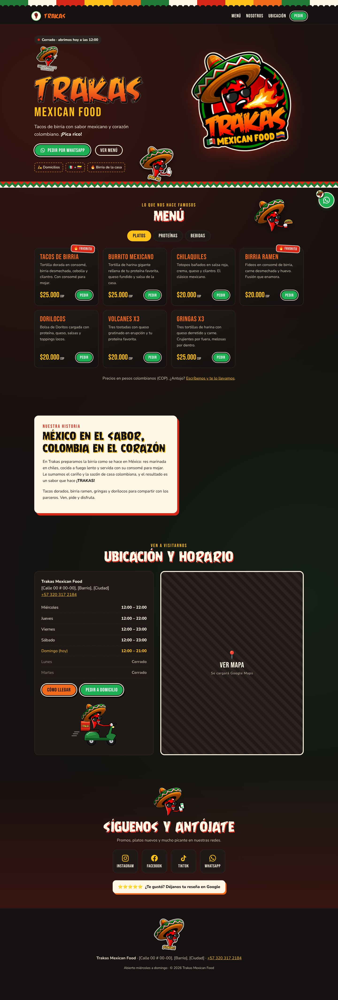
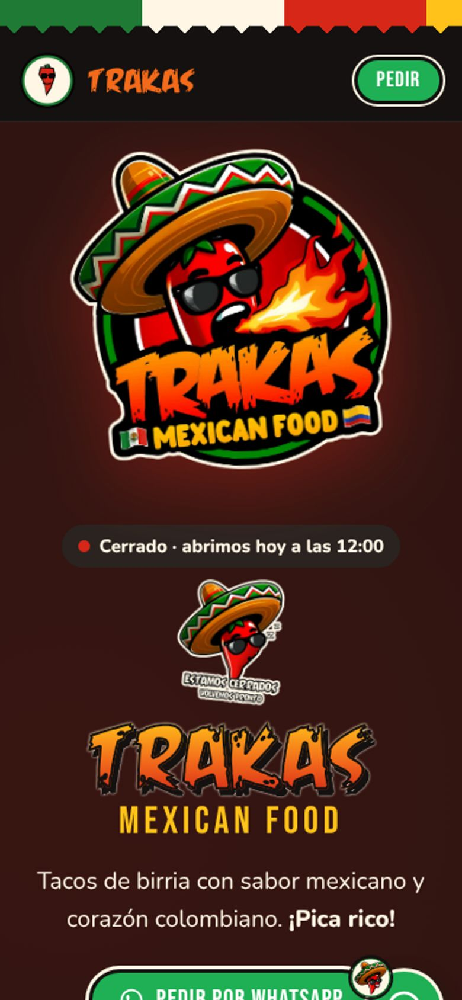
menu.jpg en la carpeta assets/.data/config.js.